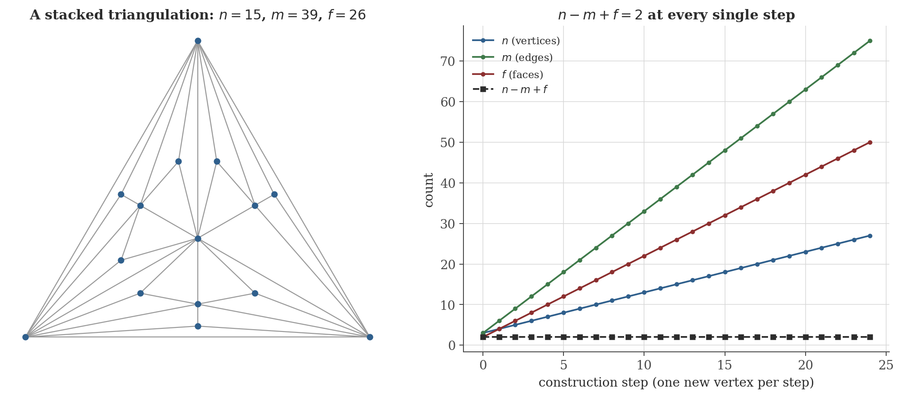
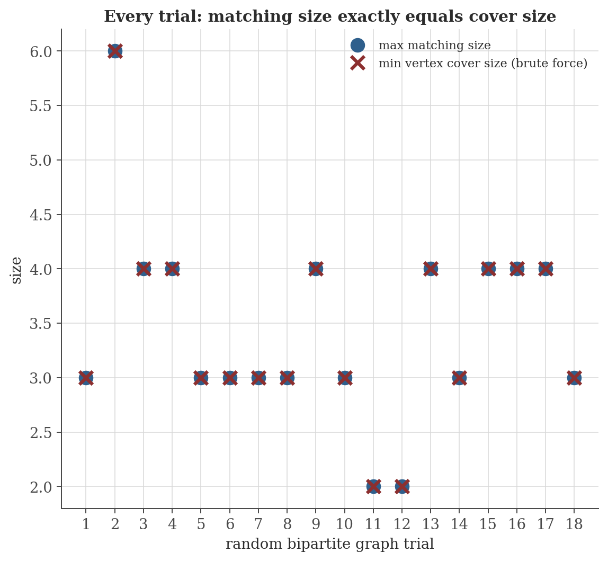

Graph Theory
Disclaimer: These are my personal notes compiled for my own reference and learning. They may contain errors, incomplete information, or personal interpretations. While I strive for accuracy, these notes are not peer-reviewed and should not be considered authoritative sources. Please consult official textbooks, research papers, or other reliable sources for academic or professional purposes.
Contents
- Basic definitions and the Handshake Lemma
- Trees: equivalent characterizations
- Euler's formula for planar graphs
- Edge bounds and non-planarity of $K_5$, $K_{3,3}$
- The Five Color Theorem
- Matchings and König's theorem
- Hall's Marriage Theorem
- Eulerian circuits
- Computation
- Common pitfalls
- Connections
- References
1. Basic definitions and the Handshake Lemma
A (simple) graph $G=(V,E)$: a vertex set $V$ and a set $E$ of unordered pairs of distinct vertices. $\deg(v)$: the number of edges incident to $v$. $G$ is bipartite if $V$ splits into $A\sqcup B$ with every edge crossing between $A$ and $B$. A path visits distinct vertices in sequence via edges; a cycle is a path returning to its start.
$\sum_{v\in V}\deg(v)=2|E|$; consequently the number of odd-degree vertices is even.
2. Trees: equivalent characterizations
A tree is a connected, acyclic graph.
Every tree with at least $2$ vertices has a vertex of degree $1$ (a leaf).
A graph on $n$ vertices is a tree iff it is connected with exactly $n-1$ edges, iff it is acyclic with exactly $n-1$ edges.
3. Euler's formula for planar graphs
For a connected planar graph drawn in the plane with $n$ vertices, $m$ edges, and $f$ faces (including the unbounded outer face): $n-m+f=2$.
Figure 1 verifies this directly by construction: repeatedly stacking a new vertex inside a face (connecting it to that face's three boundary vertices) adds exactly $1$ vertex, $3$ edges, and (splitting one face into three) $2$ faces at each step — so $n-m+f$ changes by $1-3+2=0$, staying at $2$ forever, exactly the induction step of the proof above, run forward rather than backward.

4. Edge bounds and non-planarity of $K_5$, $K_{3,3}$
A simple connected planar graph with $n\geq3$ vertices has $m\leq3n-6$ edges; if additionally triangle-free, $m\leq2n-4$.
$K_5$ and $K_{3,3}$ are not planar.
(Kuratowski's theorem — a graph is planar iff it contains no subdivision of $K_5$ or $K_{3,3}$ — is the converse, that these two obstructions are the only ones; it is a substantially harder theorem and not proved here.)
5. The Five Color Theorem
Every simple planar graph is $5$-colorable.
This proof is completely elementary and predates computers by nearly a century (Heawood, 1890, correcting an earlier flawed proof of Kempe's own four-color attempt). The stronger Four Color Theorem (every planar graph is $4$-colorable, without the "or" case escape this proof relies on at color $5$) resisted every hand proof attempt for a century and was finally settled by Appel and Haken (1976) via an exhaustive, computer-verified case analysis of $1{,}936$ unavoidable configurations — the first major theorem in mathematics whose proof no human has ever fully checked by hand, and Section 10's first pitfall returns to why that mattered.
6. Matchings and König's theorem
A matching is a set of edges with no shared endpoints. A vertex cover is a set of vertices touching every edge. An augmenting path for matching $M$ is a path alternating between edges outside and inside $M$, starting and ending at $M$-unmatched vertices.
max matching size $\leq$ min vertex cover size.
$M$ is a maximum matching iff no $M$-augmenting path exists.
In a bipartite graph, max matching size $=$ min vertex cover size.
Figure 2 checks this against an independent, brute-force computation of minimum vertex cover on several random bipartite graphs — a genuinely different algorithm arriving at the same number every time, exactly as the theorem demands. Section 10 records a specific non-bipartite graph where the two quantities genuinely differ, showing bipartiteness is not a technical convenience but a load-bearing hypothesis.

7. Hall's Marriage Theorem
A bipartite graph $G=(A\cup B,E)$ has a matching saturating every vertex of $A$ iff $|N(S)|\geq|S|$ for every $S\subseteq A$ (Hall's condition), where $N(S)$ is the set of $B$-vertices adjacent to some vertex of $S$.
Hall's theorem is König's theorem's most quoted corollary — the "marriage" framing (can every one of $|A|$ people be matched to an acceptable partner in $B$) is the same mathematical statement as the vertex-cover equality one step earlier, made to sound like a scheduling or assignment problem.
8. Eulerian circuits
A connected graph has a closed walk using every edge exactly once (an Eulerian circuit) iff every vertex has even degree.
This is the theorem behind the original 1736 Königsberg bridges problem (Euler's own): the seven-bridge city graph has vertices of odd degree, so by this theorem — stated by Euler well before "graph theory" existed as a subject — no walk crossing every bridge exactly once and returning to its start can exist, regardless of how cleverly a route is chosen.
9. Computation
The figures above are generated by graph-theory/generate_figures.py. The snippet below reproduces the Euler's-formula construction trace and the König's-theorem cross-check.
history, coords, edges = build_triangulation(12, seed=1)
for n, m, f in history[::3]:
print(n, m, f, n - m + f)
rng = random.Random(0)
for t in range(6):
nA, nB = rng.randint(3, 6), rng.randint(3, 6)
p = rng.uniform(0.25, 0.6)
edges = random_bipartite(nA, nB, p, seed=t)
mm = max_matching(nA, edges)
vc = brute_force_min_vertex_cover(nA, nB, edges)
print(f"trial {t}: nA={nA} nB={nB} |E|={len(edges)} matching={mm} vertex_cover={vc} equal={mm==vc}")
Actual output:
3 3 2 2
6 12 8 2
9 21 14 2
12 30 20 2
15 39 26 2
trial 0: nA=6 nB=6 |E|=5 matching=3 vertex_cover=3 equal=True
trial 1: nA=6 nB=6 |E|=26 matching=6 vertex_cover=6 equal=True
trial 2: nA=5 nB=6 |E|=10 matching=4 vertex_cover=4 equal=True
trial 3: nA=4 nB=4 |E|=6 matching=4 vertex_cover=4 equal=True
trial 4: nA=3 nB=5 |E|=12 matching=3 vertex_cover=3 equal=True
trial 5: nA=4 nB=5 |E|=6 matching=3 vertex_cover=3 equal=TrueEvery triangulation step preserves $n-m+f=2$ exactly, and every one of the six random bipartite trials confirms matching size $=$ vertex cover size exactly — two independent algorithms (an augmenting-path search and brute-force subset enumeration) landing on the same number every time, precisely what König's theorem promises.
10. Common pitfalls
Section 5's proof is fully checkable by hand and was, within a few years of Kempe's original (flawed) four-color attempt. The Four Color Theorem's only known proofs rely on a computer-checked case analysis too large for direct human verification — a real and still-debated methodological question about what counts as a mathematical proof, not a gap anyone expects to close by finding a short hand argument (many have tried and failed for over a century).
The $5$-cycle $C_5$ has maximum matching size $2$ (any two disjoint edges) but minimum vertex cover size $3$ (removing any $2$ vertices from a $5$-cycle always leaves at least one edge uncovered, checkable by exhausting the $\binom52=10$ pairs). Section 6's Lemma ($\leq$) still holds, but equality fails outside bipartite graphs — the harder direction of the proof used the two-sided structure ($A$ vs. $B$) essentially, via the alternating-path argument.
Section 2's theorem needs either connectivity or acyclicity as a second hypothesis alongside the edge count — not the count alone. Two disjoint triangles plus an isolated edge (total $8$ vertices, $7$ edges $=n-1$) has the right edge count but is neither connected nor acyclic; it is not a tree, and adding the missing hypothesis is not optional bookkeeping.
A disconnected planar graph with $k$ components satisfies $n-m+f=1+k$, not $2$ (each extra component adds a vertex-and-edge-free contribution to $n$ without splitting a face, until faces are shared across components in the embedding) — Section 3's proof explicitly used connectivity to guarantee a spanning structure to induct on. Non-planar graphs drawn with crossings simply have no well-defined face count consistent with the formula at all; "planar" is doing real work, not just describing a convenient special case.
11. Connections
- Computability and formal languages. Independent Set, Vertex Cover, and Clique — proved NP-hard there (its Section 7) via a reduction from 3-SAT — are exactly this note's matching and covering objects (Section 6); that reduction's proof leans on the same "cover every edge with as few vertices as possible" combinatorics developed here, at a scale (arbitrary graphs, not just bipartite) where König's clean equality no longer holds — precisely the gap that makes the general problem hard.
- Mathematical logic. The De Bruijn–Erdős theorem in that note's Section 4 (an infinite graph is $k$-colorable iff every finite subgraph is) is a compactness statement about exactly this note's chromatic number, proved entirely by logical means rather than graph-theoretic ones.
- Distributed systems and concurrency. That note's quorum-intersection argument (its Section 7) is the same "any two large-enough subsets must overlap" pigeonhole idea used implicitly throughout matching theory here — majority quorums are, in effect, vertex covers of the complete graph on processes.
12. References
- West, D. B. (2001). Introduction to Graph Theory (2nd ed.). Prentice Hall.
- Diestel, R. (2017). Graph Theory (5th ed.). Springer.
- Bondy, J. A., & Murty, U. S. R. (2008). Graph Theory. Springer.
- Appel, K., & Haken, W. (1977). Every planar map is four colorable. Illinois Journal of Mathematics, 21(3), 429–490.